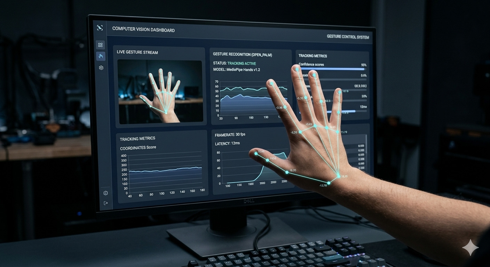

Solving business problems with Data.
Data Science specialist focused on EDA, Churn Prediction, and Market Analysis. Transforming raw numbers into strategic growth.
Signature Project
Gesture Control System
An innovative computer vision project enabling touchless device control through real-time hand gesture recognition. Built using Python, OpenCV, and MediaPipe.

Case Studies
Analytical Dashboards
Hobbies & Interests
Music & Guitar
Playing guitar is my creative outlet. Whether it's acoustic melodies or experimenting with different genres, music helps me unwind and think differently about problems.
Volleyball
Volleyball keeps me active and teaches me teamwork and quick decision-making. The sport's fast pace and strategic elements mirror the problem-solving mindset I bring to data analytics.
Start a Data Project.
Ready to turn complex operational metrics into clear, interactive deployment strategy pipelines? Let's connect.